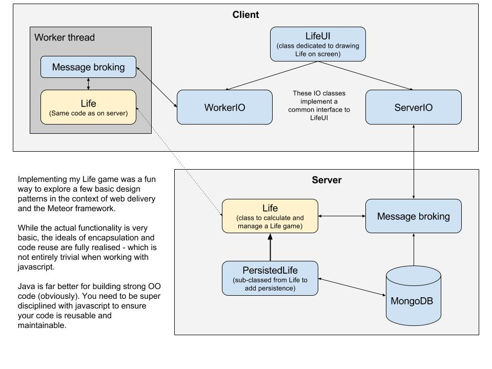

The general architecture looks like this:

The Life class is the core engine that models the game, allows for cells
to be set and unset and, crucially, to iterate into the next generation. Iteration is a fairly
compute intensive task and is thus best performed in a compute thread outside the UI. In this
example, the Life class is used both on the server and in a browser
worker thread.
Drawing the game of Life is relatively simple and is achieved with the LifeUI class.
This class principally relies on being supplied with cell changes and drawing those changes on an HTML canvas.
The LifeUI class is instantiated with an IO class that implements the required
comms to the Life engine - which may exist in a worker thread or on the server.
Thus there are two IO classes that implement a common interface (LifeIO). These are:
An additional feature of the server implementation is that the game and its history is persisted
so that it may be recalled and displayed at any time. The features to achieve persistence are implemented
with PersistedLife, a subclass of Life.
The server responds to messages from the Client to manage what Lives are persisted, iterated and communicated.
These are message broking functions which are encapsulated in the ServerLives
class which is a static class. In the same way the client-side worker thread receives and processes messages
as per the WorkerThread namespace.
Finally, LifePatterns is a static class that supplies Life shapes and which
is used extensively by the test scripts